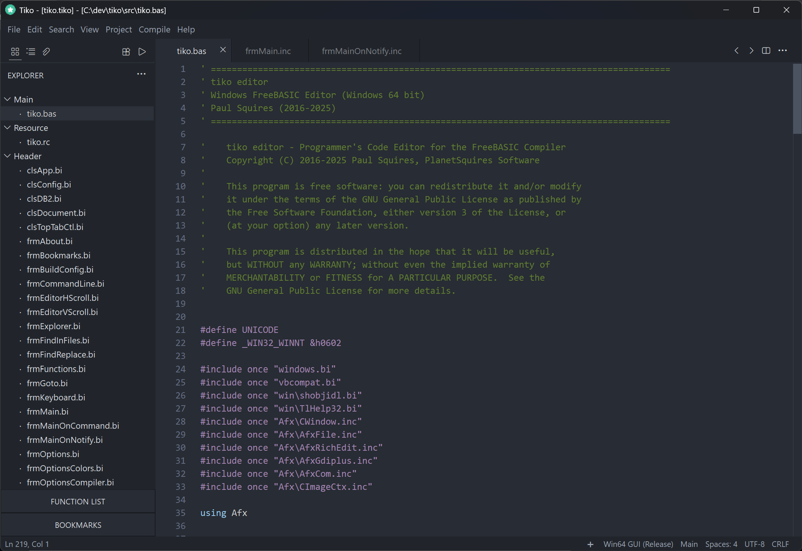

Tiko Editor Documentation
Everything you need to install, learn and master Tiko — the native Windows code editor for FreeBASIC development.
Tiko is a fast, native Windows code editor built for FreeBASIC development — with a project system, an integrated compiler workflow, a real debugger and a symbol engine that understands your code. It edits any text-based language equally well.

Start here
Quick Start
Install, open a file, edit, search, build and run — in about 25 minutes.
What is Tiko?
The product in a page: what it does, who it is for, and its design philosophy.
Ten-lesson tutorial
A progressive course from your first file through to advanced editing.
Tour the interface
Every part of the main window, named and explained with diagrams.
Explore the documentation
Editing text
Cursors, selections, clipboard, indentation, encoding and folding.
Searching
Find, Replace, Find in Project, regular expressions and search history.
Navigation
Goto Definition, symbol search, bookmarks, function list and history.
Productivity
Autocomplete, code tips, the formatter, and line and block commands.
Projects
The workspace model, the Explorer, project files and project options.
Building programs
Compiler setup, build configurations, running, and error navigation.
Debugging
Breakpoints, stepping, watches, the call stack and the debugger panes.
Customization
Themes, fonts, syntax colours, keyboard shortcuts, layout and settings.
Reference
Keyboard shortcuts
Every default shortcut, grouped by category, in printable tables.
Menu reference
Every menu and every command, with shortcuts and related topics.
Configuration reference
Every setting: purpose, default, accepted values and related options.
Command reference
Commands with their identifiers, menu locations and shortcuts.
Dialog reference
Every dialog box and what each control does.
FAQ
Around fifty common questions with short, direct answers.
Tips and tricks
Power-user workflows, hidden features and keyboard and mouse tricks.
Troubleshooting
Fixes for start-up failures, compiler problems, encoding and performance.
Glossary
Plain-language definitions of the terms used throughout these pages.
Index
A complete alphabetical index of topics and features.
How to use this help system
- Press Ctrl + K anywhere to open search. Results are ranked, and your search terms are highlighted on the page you land on.
- The sidebar groups every topic into collapsible sections. It remembers which sections you left open.
- Long pages carry an On this page outline on the right that tracks your scroll position.
- Use Previous and Next at the foot of each page to read the documentation straight through, front to back.
- Switch between light and dark with the theme button in the header. Your choice is remembered; if you never choose, the site follows your operating system.
- Every page is print-ready — use your browser's Print command to produce a clean copy without navigation furniture.
This help system works entirely offline. It is plain HTML, CSS and JavaScript with no external requests, so you can copy the folder anywhere — a USB stick, a network share, a documentation server — and open index.html in any modern browser.